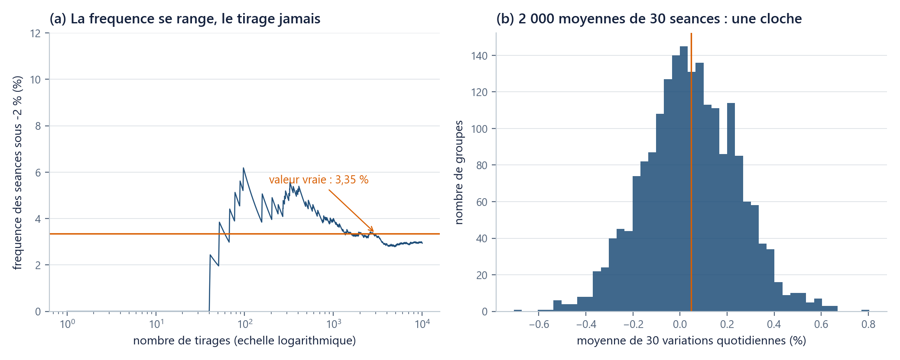

Outils : Python de zéro, sans rien installer
Huit fiches d’une page suffisent pour les probabilités du cours
Le cours n'utilise que huit notions de probabilité, chacune tenant en une page avec une mini-expérience de cinq lignes.
Où suis-je ? unité 8 sur 8
Les unités du chapitre
- 01Six lignes suffisent pour voir…15 min
- 02Un nom retient un résultat…20 min
- 03Une liste range des prix dans l'ordre20 min
- 04Une boucle parcourt25 min
- 05Une fonction nomme un calcul20 min
- 06Un tableau numpy remplace la boucle25 min
- 07Votre machine devient l'ordinateur du cours30 min
- 08Huit fiches d'une page suffisent…45 min
Dans cette unité
La question
Un étudiant qui n'a pas fait de probabilités depuis trois ans ouvre le ch02 et lit « espérance », « quantile », « écart-type de la moyenne » : trois mots, et l'impression qu'il faudrait reprendre un semestre avant d'avoir le droit de continuer.
C'est faux : huit notions, pas une de plus, et le cours n'en demande jamais la démonstration, seulement l'usage. Chaque fiche donne une définition, un chiffre du fil rouge, cinq lignes à exécuter, et l'unité qui la reprend pour de bon.
On essaie d’abord
Une question avant de lire : 139 séances sur 4 151 sont passées sous le seuil de −2 %, soit 3,35 % (u06). Si vous tirez au sort 10 000 séances dans ce paquet, la proportion que vous obtiendrez sera-t-elle 3,35 % ?
Non : vous obtiendrez 2,94 % avec le tirage de cette page. Ni 3,35 %, ni un nombre au hasard : un nombre proche, dont l'écart se prévoit. La théorie qui suit sert à dire de combien.
L’idée : les huit fiches
Préambule commun, à exécuter une fois ; il applique la règle des graines d'u06.
import numpy as np
from mcdp_utils import charger_fil_rouge
fil = charger_fil_rouge()
sp = fil["rendements_log"]["SP500"] # 4 151 variations quotidiennes
SEED = 42
rng = np.random.default_rng(SEED)
f1, f2, f3, f4, f5, f6, f7, f8 = rng.spawn(8)
Fiche 1 : Variable aléatoire
Définition. Une variable aléatoire est un nombre qui dépend du scénario tiré : tant que le scénario n'est pas tiré, elle n'a pas de valeur, seulement un ensemble de valeurs possibles.
scenarios = f1.choice(sp, size=100_000, replace=True)
print(scenarios.shape) # (100000,)
print(np.round(scenarios[:3] * 100, 3)) # [-0.574 0.791 -0.072]
print(round(scenarios.min() * 100, 2), round(scenarios.max() * 100, 2)) # -12.77 9.09
En Python, une variable aléatoire simulée est un tableau numpy : une case par scénario, l'objet d'u06. C'est pourquoi ce chapitre a passé une unité sur les tableaux avant la première probabilité.
Intuition financière. Ce tableau de 100 000 valeurs, c'est « la séance de demain » vue de ce soir : autant de futurs possibles, un par case. Renvoi : ch02 u01.
Fiche 2 : Espérance
Définition. L'espérance d'une variable aléatoire est la moyenne de ses valeurs possibles, pondérée par leurs chances d'apparaître ; ce n'est ni la valeur la plus fréquente, ni celle du milieu.
print(round(scenarios.mean() * 100, 4), round(sp.mean() * 100, 4)) # 0.049 0.0462
gains = np.maximum(scenarios, 0.0)
print(round(gains.mean() * 100, 4), round(max(scenarios.mean(), 0.0) * 100, 4)) # 0.3857 0.049
La deuxième ligne est la mise en garde de la fiche : la moyenne des gains (0,3857 %) n'est pas le gain de la moyenne (0,049 %). Dès que le calcul appliqué aux valeurs n'est pas une simple droite (ici np.maximum, le max d'u05), moyenner d'abord donne une autre réponse, et c'est la mauvaise.
Intuition financière. Un gain moyen n'est pas un gain possible : une chance sur mille de gagner mille euros a la même espérance qu'un euro certain, et ce n'est pas le même contrat. Renvoi : ch02 u03.
Fiche 3 : Variance et écart-type
Définition. La variance est la moyenne des carrés des écarts au centre ; l'écart-type en est la racine carrée, et il se lit dans la même unité que les données.
print(round(sp.std(ddof=1) * 100, 4), round(sp.std() * 100, 4)) # 1.0903 1.0901
print(round(float(np.var(sp, ddof=1)), 8)) # 0.00011887
print(round(sp.std(ddof=1) * np.sqrt(252), 4)) # 0.1731
Trois faits. L'écart-type se lit en pourcentage par séance (1,0903 %), la variance non, car elle est en « pourcentage au carré ». ddof=1 divise par n-1, ddof=0 par n : le piège d'u06. Et pour des tirages indépendants, ce sont les variances qui s'additionnent, jamais les écarts-types, d'où la racine de 252 de la troisième ligne, expliquée en ch01 u02.
Intuition financière. L'écart-type est la mesure de risque la plus utilisée du métier, et la plus critiquable : il traite une hausse de 3 % et une baisse de 3 % de la même façon. Renvoi : ch01 u02, ch02 u02.
Fiche 4 : Covariance et corrélation
Définition. La covariance mesure si deux séries s'écartent de leur centre en même temps ; la corrélation est la même information ramenée entre −1 et +1, donc lisible.
tlt = fil["rendements_log"]["TLT"]
melange = 0.5 * sp + 0.5 * tlt
print(round(float(np.corrcoef(sp, tlt)[0, 1]), 3)) # -0.29
print(round(melange.std(ddof=1) * np.sqrt(252), 4),
round(0.5 * (sp.std(ddof=1) + tlt.std(ddof=1)) * np.sqrt(252), 4)) # 0.0966 0.1614
Le S&P 500 et les obligations d'État américaines à long terme bougent en sens contraire (−0,29). Conséquence chiffrée : un mélange à parts égales, rééquilibré chaque jour, affiche 0,0966 là où la moyenne des deux séries prises séparément donnerait 0,1614. Quatre dixièmes de moins (−40,1 %), sans rien retirer aux moyennes de la fiche 2, qui s'additionnent sans se soucier de la corrélation.
Intuition financière. C'est la diversification, le seul repas gratuit du métier. Attention : corrélation nulle n'est pas indépendance. Renvoi : ch01 u03.
Fiche 5 : Les cinq familles utiles, par leur rôle
Définition. Une famille de tirages se reconnaît à ce qu'elle produit, pas à sa formule.
print(round(float((f5.random(100_000) < 0.0335).mean()), 4)) # 0.0333 -- oui/non
print(np.round(f5.random(3), 4)) # [0.0551 0.2688 0.2365]
print(np.round(f5.standard_normal(3), 4)) # [0.9001 1.3638 0.6446]
positifs = np.exp(f5.standard_normal(100_000))
print(round(float(positifs.min()), 4), round(float(np.median(positifs)), 3),
round(float(positifs.mean()), 3)) # 0.0106 1.001 1.654
Cinq rôles. Bernoulli : un oui/non, ici « la séance est-elle passée sous −2 % ? ». Uniforme : la matière première, un nombre entre 0 et 1, dont tout le reste se déduit. Normale : la cloche symétrique, centrée, qui décrit bien une somme de petits effets. Log-normale : l'exponentielle d'une normale, toujours positive, penchée à droite, sa moyenne (1,654) au-dessus de sa médiane (1,001), la valeur qui coupe la série en deux ; c'est elle qui empêche un prix simulé de devenir négatif. Poisson : un compte d'événements (f5.poisson(2.0, 100_000).mean() rend 1,997 pour un réglage à 2).
Intuition financière. Un prix se modélise par une log-normale, un défaut par un oui/non, un nombre de sinistres par un compte. Renvoi : ch02 u05, ch03 u04.
Fiche 6 : Loi des grands nombres
Définition. Quand on répète des tirages indépendants de même nature, leur moyenne se rapproche de la vraie moyenne, sans jamais promettre de l'atteindre.
indicatrice = (scenarios < -0.02).astype(float)
courante = np.cumsum(indicatrice) / np.arange(1, indicatrice.size + 1)
print(round(float(courante[99]) * 100, 2), round(float(courante[9_999]) * 100, 2),
round(float(courante[-1]) * 100, 2), round(float((sp < -0.02).mean()) * 100, 4))
# 6.0 2.94 3.28 3.3486
À 100 tirages : 6,0 %. À 10 000 : 2,94 %. À 100 000 : 3,28 %, contre une vraie valeur de 3,3486 %. La suite se range dans un entonnoir qui se referme, sans jamais se poser dessus.
Intuition financière. C'est le permis de conduire du cours : il autorise à remplacer un calcul exact par une moyenne de tirages. Il ne dit rien de la vitesse ; c'est la fiche suivante. Renvoi : ch02 u01, ch02 u04.
Fiche 7 : Théorème central limite, et la marge d’erreur
Définition. La moyenne d'un grand nombre de tirages se répartit en cloche autour de la vraie valeur, quelle que soit la forme des tirages de départ, et sa dispersion vaut l'écart-type des tirages divisé par \sqrt{n}.
groupes = f7.choice(sp, size=(2_000, 30), replace=True)
moyennes = groupes.mean(axis=1)
print(round(float(moyennes.std(ddof=1)) * 100, 4),
round(sp.std(ddof=1) / np.sqrt(30) * 100, 4)) # 0.1993 0.1991
demi = 1.96 * sp.std(ddof=1) / np.sqrt(30)
print(round(float(np.mean(np.abs(moyennes - sp.mean()) <= demi)), 4)) # 0.9505
size=(2_000, 30) fabrique une grille à deux axes (deux mille lignes de trente cases) et mean(axis=1) moyenne chaque ligne, ce qui donne deux mille moyennes de trente séances. La dispersion mesurée de ces deux mille moyennes est 0,1993 % ; la dispersion prévue par la division par \sqrt{30} est 0,1991 %. Et 95,05 % des groupes tombent dans la fourchette « ± 1,96 fois cette dispersion », annoncée pour 95 %.
Intuition financière. Deux conséquences économiques, pas théoriques : diviser la marge d'erreur par deux coûte quatre fois plus de tirages, et gagner une décimale en coûte cent fois plus.

Renvoi : ch02 u02, ch04 u01.
Fiche 8 : Quantile et moyenne conditionnelle
Définition. Le quantile à 1 % est la valeur en dessous de laquelle tombe 1 % des observations ; la moyenne conditionnelle est la moyenne calculée sur ce 1 % seulement.
seuil = np.percentile(sp, 1.0)
print(round(float(seuil) * 100, 3), int((sp <= seuil).sum())) # -3.157 42
print(round(float(sp[sp <= seuil].mean()) * 100, 3)) # -4.519
Deux nombres qui ne disent pas la même chose. Le quantile répond à « à partir de quelle perte suis-je dans le pire centième ? », −3,157 %, où tombent 42 séances sur 4 151. La moyenne conditionnelle répond à « et quand j'y suis, combien je perds en moyenne ? », −4,519 %, nettement pire.
Intuition financière. Le premier chiffre est le seuil réglementaire dont vivent les salles de marché ; le second est celui qui décrit ce qui se passe quand on le dépasse. Renvoi : ch02 u05, ch05 u04.
Le piège : « la moyenne se stabilise » n’est pas « la moyenne est exacte »
La fiche 6 montre une suite qui se range ; jamais une suite qui arrive. À 100 000 tirages, la fréquence obtenue est 3,28 % pour une vraie valeur de 3,3486 % : l'écart de 0,07 point ne disparaîtra pas en attendant, il diminuera comme 1/\sqrt{n}, donc lentement.
La faute qui en découle est de publier un nombre issu de tirages sans sa marge d'erreur : ce n'est pas un résultat, c'est une opinion appuyée sur une graine. Le ch04 en fait un chapitre.
Vérifiez-vous
(a) L'espérance d'un gain est-elle un gain possible ?
Réponse
(b) Quelle fiche le ch04 exige-t-il ?
Réponse
(c) (rétrospective) Les 4 151 variations quotidiennes de la fiche 1 ne forment pas une cloche : elles ont une pointe centrale très haute et une queue gauche longue (figure d'u06). Comment la fiche 7 peut-elle malgré tout produire une cloche ?
Réponse
(d) (rétrospective) En u06, vous avez proscrit default_rng(SEED + i) au profit de rng.spawn(k). Le préambule de cette page crée huit enfants d'un coup. Pourquoi huit, et pas un générateur par fiche créé au fil de l'eau ?
Réponse
Ce que vous savez faire maintenant
- Nommer les huit notions de probabilité dont ce cours a besoin, et reconnaître laquelle une unité vous demande.
- Distinguer les trois questions que l'on pose au même tableau de tirages : sa moyenne (fiche 2), sa dispersion (fiche 3), son pire centième (fiche 8).
- Savoir qu'une moyenne de tirages se publie avec sa marge d'erreur, et d'où cette marge vient (fiche 7).
Unité suivante. Aucune : cette page est un filet, pas une étape. Revenez à l'unité qui vous y a envoyé, ou, si vous êtes arrivé ici par curiosité, au ch01, qui n'a besoin d'aucune de ces huit fiches.